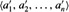
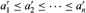

|
|
< Day Day Up > |
|
This chapter will familiarize you with the framework we shall use throughout the book to think about the design and analysis of algorithms. It is self-contained, but it does include several references to material that will be introduced in Chapters 3 and 4. (It also contains several summations, which Appendix A shows how to solve.)
We begin by examining the insertion sort algorithm to solve the sorting problem introduced in Chapter 1. We define a "pseudocode" that should be familiar to readers who have done computer programming and use it to show how we shall specify our algorithms. Having specified the algorithm, we then argue that it correctly sorts and we analyze its running time. The analysis introduces a notation that focuses on how that time increases with the number of items to be sorted. Following our discussion of insertion sort, we introduce the divide-and-conquer approach to the design of algorithms and use it to develop an algorithm called merge sort. We end with an analysis of merge sort's running time.
Our first algorithm, insertion sort, solves the sorting problem introduced in Chapter 1:
Input: A sequence of n numbers 〈a1, a2, . . .,an〉.
Output: A permutation (reordering)  of the input sequence such that .
The numbers that we wish to sort are also known as the keys.
In this book, we shall typically describe algorithms as programs written in a pseudocode that is similar in many respects to C, Pascal, or Java. If you have been introduced to any of these languages, you should have little trouble reading our algorithms. What separates pseudocode from "real" code is that in pseudocode, we employ whatever expressive method is most clear and concise to specify a given algorithm. Sometimes, the clearest method is English, so do not be surprised if you come across an English phrase or sentence embedded within a section of "real" code. Another difference between pseudocode and real code is that pseudocode is not typically concerned with issues of software engineering. Issues of data abstraction, modularity, and error handling are often ignored in order to convey the essence of the algorithm more concisely.
We start with insertion sort, which is an efficient algorithm for sorting a small number of elements. Insertion sort works the way many people sort a hand of playing cards. We start with an empty left hand and the cards face down on the table. We then remove one card at a time from the table and insert it into the correct position in the left hand. To find the correct position for a card, we compare it with each of the cards already in the hand, from right to left, as illustrated in Figure 2.1. At all times, the cards held in the left hand are sorted, and these cards were originally the top cards of the pile on the table.
Our pseudocode for insertion sort is presented as a procedure called INSERTION-SORT, which takes as a parameter an array A[1 ‥ n] containing a sequence of length n that is to be sorted. (In the code, the number n of elements in A is denoted by length[A].) The input numbers are sorted in place: the numbers are rearranged within the array A, with at most a constant number of them stored outside the array at any time. The input array A contains the sorted output sequence when INSERTION-SORT is finished.
INSERTION-SORT(A) 1 for j ← 2 to length[A] 2 do key ← A[j] 3 ▹ Insert A[j] into the sorted sequence A[1 ‥ j - 1]. 4 i ← j - 1 5 while i > 0 and A[i] > key 6 do A[i + 1] ← A[i] 7 i ← i - 1 8 A[i + 1] ← key
Figure 2.2 shows how this algorithm works for A = 〈5, 2, 4, 6, 1, 3〉. The index j indicates the "current card" being inserted into the hand. At the beginning of each iteration of the "outer" for loop, which is indexed by j, the subarray consisting of elements A[1 ‥ j - 1] constitute the currently sorted hand, and elements A[j + 1 ‥ n] correspond to the pile of cards still on the table. In fact, elements A[1 ‥ j - 1] are the elements originally in positions 1 through j - 1, but now in sorted order. We state these properties of A[1 ‥ j -1] formally as a loop invariant:
At the start of each iteration of the for loop of lines 1-8, the subarray A[1 ‥ j - 1] consists of the elements originally in A[1 ‥ j - 1] but in sorted order.
We use loop invariants to help us understand why an algorithm is correct. We must show three things about a loop invariant:
Initialization: It is true prior to the first iteration of the loop.
Maintenance: If it is true before an iteration of the loop, it remains true before the next iteration.
Termination: When the loop terminates, the invariant gives us a useful property that helps show that the algorithm is correct.
When the first two properties hold, the loop invariant is true prior to every iteration of the loop. Note the similarity to mathematical induction, where to prove that a property holds, you prove a base case and an inductive step. Here, showing that the invariant holds before the first iteration is like the base case, and showing that the invariant holds from iteration to iteration is like the inductive step.
The third property is perhaps the most important one, since we are using the loop invariant to show correctness. It also differs from the usual use of mathematical induction, in which the inductive step is used infinitely; here, we stop the "induction" when the loop terminates.
Let us see how these properties hold for insertion sort.
Initialization: We start by showing that the loop invariant holds before the first loop iteration, when j = 2.[1] The subarray A[1 ‥ j - 1], therefore, consists of just the single element A[1], which is in fact the original element in A[1]. Moreover, this subarray is sorted (trivially, of course), which shows that the loop invariant holds prior to the first iteration of the loop.
Maintenance: Next, we tackle the second property: showing that each iteration maintains the loop invariant. Informally, the body of the outer for loop works by moving A[ j - 1], A[ j - 2], A[ j - 3], and so on by one position to the right until the proper position for A[ j] is found (lines 4-7), at which point the value of A[j] is inserted (line 8). A more formal treatment of the second property would require us to state and show a loop invariant for the "inner" while loop. At this point, however, we prefer not to get bogged down in such formalism, and so we rely on our informal analysis to show that the second property holds for the outer loop.
Termination: Finally, we examine what happens when the loop terminates. For insertion sort, the outer for loop ends when j exceeds n, i.e., when j = n + 1. Substituting n + 1 for j in the wording of loop invariant, we have that the subarray A[1 ‥ n] consists of the elements originally in A[1 ‥ n], but in sorted order. But the subarray A[1 ‥ n] is the entire array! Hence, the entire array is sorted, which means that the algorithm is correct.
We shall use this method of loop invariants to show correctness later in this chapter and in other chapters as well.
We use the following conventions in our pseudocode.
Indentation indicates block structure. For example, the body of the for loop that begins on line 1 consists of lines 2-8, and the body of the while loop that begins on line 5 contains lines 6-7 but not line 8. Our indentation style applies to if-then-else statements as well. Using indentation instead of conventional indicators of block structure, such as begin and end statements, greatly reduces clutter while preserving, or even enhancing, clarity.[2]
The looping constructs while, for, and repeat and the conditional constructs if, then, and else have interpretations similar to those in Pascal.[3] There is one subtle difference with respect to for loops, however: in Pascal, the value of the loop-counter variable is undefined upon exiting the loop, but in this book, the loop counter retains its value after exiting the loop. Thus, immediately after a for loop, the loop counter's value is the value that first exceeded the for loop bound. We used this property in our correctness argument for insertion sort. The for loop header in line 1 is for j ← 2 to length[A], and so when this loop terminates, j = length[A]+1 (or, equivalently, j = n+1, since n = length[A]).
The symbol "▹" indicates that the remainder of the line is a comment.
A multiple assignment of the form i ← j ← e assigns to both variables i and j the value of expression e; it should be treated as equivalent to the assignment j ← e followed by the assignment i ← j.
Variables (such as i, j, and key) are local to the given procedure. We shall not use global variables without explicit indication.
Array elements are accessed by specifying the array name followed by the index in square brackets. For example, A[i] indicates the ith element of the array A. The notation "‥" is used to indicate a range of values within an array. Thus, A[1 ‥ j] indicates the subarray of A consisting of the j elements A[1], A[2], . . . , A[j].
Compound data are typically organized into objects, which are composed of attributes or fields. A particular field is accessed using the field name followed by the name of its object in square brackets. For example, we treat an array as an object with the attribute length indicating how many elements it contains. To specify the number of elements in an array A, we write length[A]. Although we use square brackets for both array indexing and object attributes, it will usually be clear from the context which interpretation is intended.
A variable representing an array or object is treated as a pointer to the data representing the array or object. For all fields f of an object x, setting y ← x causes f[y] = f[x]. Moreover, if we now set f[x] ← 3, then afterward not only is f[x] = 3, but f[y] = 3 as well. In other words, x and y point to ("are") the same object after the assignment y ← x.
Sometimes, a pointer will refer to no object at all. In this case, we give it the special value NIL.
Parameters are passed to a procedure by value: the called procedure receives its own copy of the parameters, and if it assigns a value to a parameter, the change is not seen by the calling procedure. When objects are passed, the pointer to the data representing the object is copied, but the object's fields are not. For example, if x is a parameter of a called procedure, the assignment x ← y within the called procedure is not visible to the calling procedure. The assignment f [x] ← 3, however, is visible.
The boolean operators "and" and "or" are short circuiting. That is, when we evaluate the expression "x and y" we first evaluate x. If x evaluates to FALSE, then the entire expression cannot evaluate to TRUE, and so we do not evaluate y. If, on the other hand, x evaluates to TRUE, we must evaluate y to determine the value of the entire expression. Similarly, in the expression "x or y" we evaluate the expression y only if x evaluates to FALSE. Short-circuiting operators allow us to write boolean expressions such as "x ≠ NIL and f[x] = y" without worrying about what happens when we try to evaluate f[x] when x is NIL.
Using Figure 2.2 as a model, illustrate the operation of INSERTION-SORT on the array A = 〈31, 41, 59, 26, 41, 58〉.
Rewrite the INSERTION-SORT procedure to sort into nonincreasing instead of nondecreasing order.
Consider the searching problem:
Input: A sequence of n numbers A = 〈a1, a2, . . . , an〉 and a value v.
Output: An index i such that v = A[i] or the special value NIL if v does not appear in A.
Write pseudocode for linear search, which scans through the sequence, looking for v. Using a loop invariant, prove that your algorithm is correct. Make sure that your loop invariant fulfills the three necessary properties.
[1]When the loop is a for loop, the moment at which we check the loop invariant just prior to the first iteration is immediately after the initial assignment to the loop-counter variable and just before the first test in the loop header. In the case of INSERTION-SORT, this time is after assigning 2 to the variable j but before the first test of whether j ≤ length[A].
[2]In real programming languages, it is generally not advisable to use indentation alone to indicate block structure, since levels of indentation are hard to determine when code is split across pages.
[3]Most block-structured languages have equivalent constructs, though the exact syntax may differ from that of Pascal.
|
|
< Day Day Up > |
|